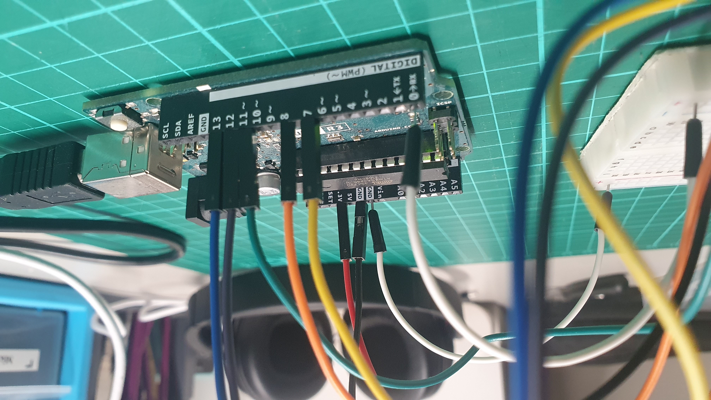
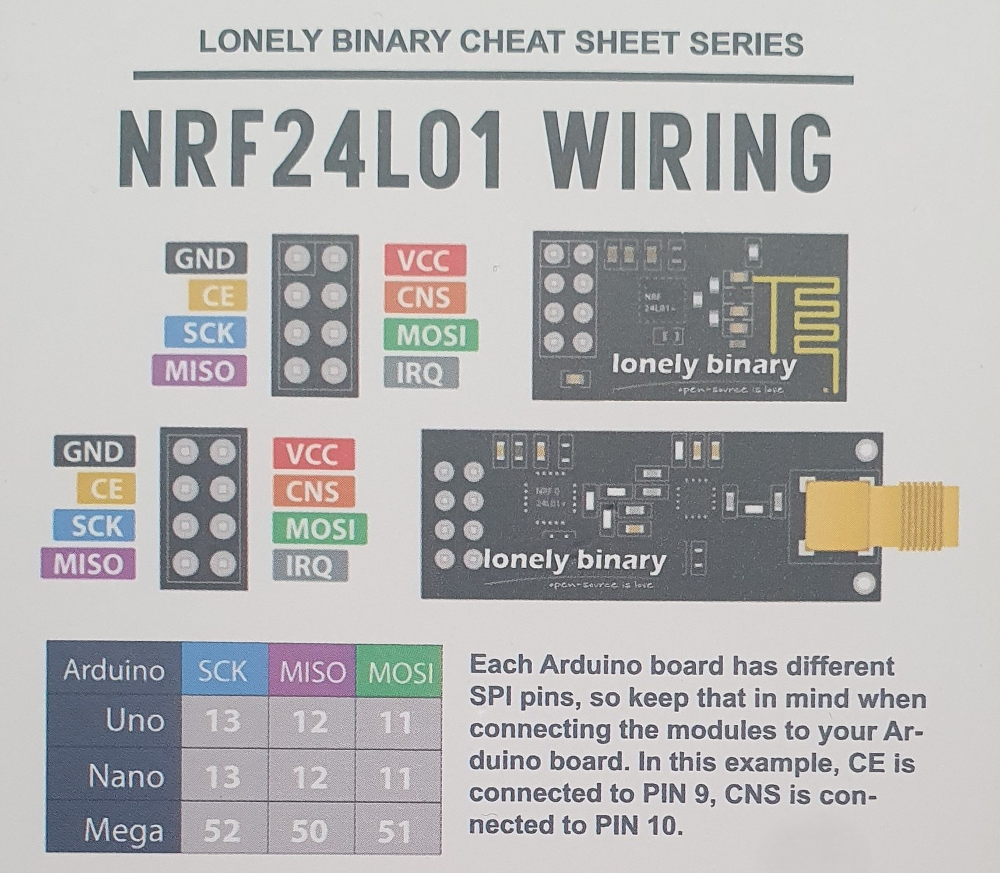

I placed an order for the nRF24L01 wireless communication module last week, which finally arrived this
week. This week, I mainly focused on playing with the nRF24L01 to understand better how it works. By the
end of the week, I had a program that could send simple commands between two Arduinos. On top of this,
my short response exam for this class is coming up in the next two weeks, so I also focused on preparing
for my exam.
transmitter code:
Arduino
#include <SPI.h>
#include <nRF24L01.h>
#include <RF24.h>
RF24 radio(7, 8); // CE, CSN
const byte address[6] = "00001";
const int buttonPin = 0;
void setup() {
radio.begin();
radio.openWritingPipe(address);
radio.setPALevel(RF24_PA_MIN);
radio.stopListening();
}
void loop() {
if (digitalRead(buttonPin) == LOW) {
radio.write("ON", 2); // Send "ON"
} else {
radio.write("OFF", 3); // Send "ON"
}
}
receiver code:
Arduino
#include <SPI.h>
#include <nRF24L01.h>
#include <RF24.h>
RF24 radio(7, 8); // CE, CSN
const byte address[6] = "00001";
const int ledPin = 2;
void setup() {
Serial.begin(9600);
radio.begin();
radio.openReadingPipe(0, address);
radio.setPALevel(RF24_PA_MIN);
radio.startListening();
pinMode(ledPin, OUTPUT);
}
void loop() {
if (radio.available()) {
char text[32] = "";
radio.read(&text, sizeof(text));
if (strcmp(text, "ON") == 0) {
digitalWrite(ledPin, HIGH); // Turn LED on
} else if (strcmp(text, "OFF") == 0) {
digitalWrite(ledPin, LOW); // Turn LED off
}
}
}
The kit I bought included two nRF24L01+PA+LNA wireless modules, which are designed for long-range
communication due to their integrated power and noise amplifiers. Two antennas were provided to enhance
signal transmission for the long-range modules. Additionally, two standard nRF24L01 wireless modules for
shorter-range applications were included. Lastly, four adaptor boards can convert 5V to 3.3V to ensure
the module would not sustain too much power.

The first thing I did before any type of coding was to figure out what pins I needed to connect the
communication module to the Arduino; the nRF24L01 has six pins on it. The pins are in the same position
for both types of radio transmitter, so luckily, there was no confusion about having the write pins for
the transmitter. However, when it came to the microcontroller because each Arduino board had different
SPI pins (serial peripheral interface), a communication method used by the Arduino to talk to other
electronic devices, I had to figure out which ones to use. Luckily, the transmitters I bought also came
with a sheet that told me the right pins were the SPI pins so that I could wire them up properly. The
image above is the sheet with the modules and the pins shown in the diagram. They follow different
colours for each pin, so I used jumper wires that follow this colour code to help avoid confusion. The
Arduino is fully wired up, as shown below.

For the microcontroller to understand how to use the radio module, I must first install the library to
make communicating with the nRF24L01 much easier. I could install this library straight from the Arduino
IDE named Rf24. After this, I can import the library into the code with the first three lines of both
codes.
With this, I wrote the transmitter code to initialise the given pins and specified the address. Then,
set up to ensure the module is ready to send data